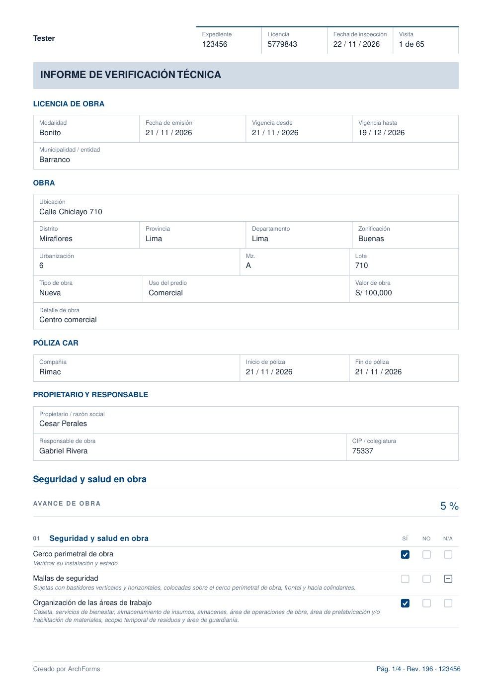
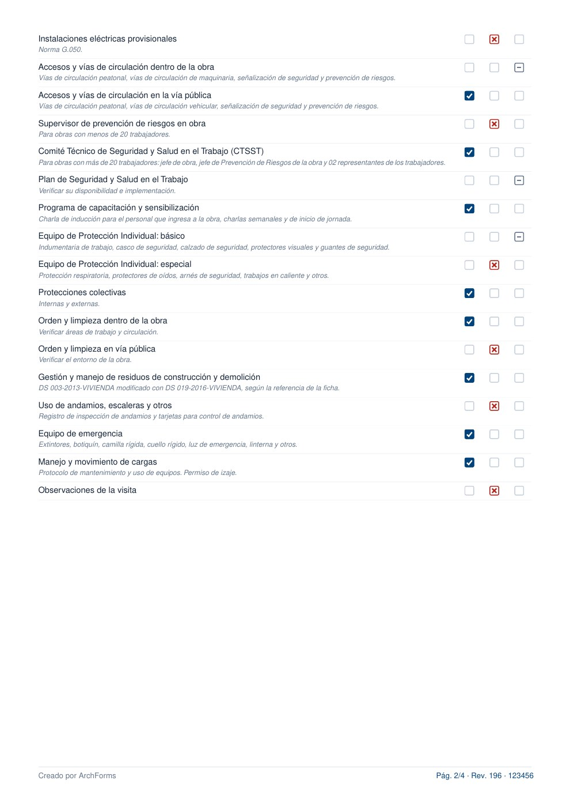
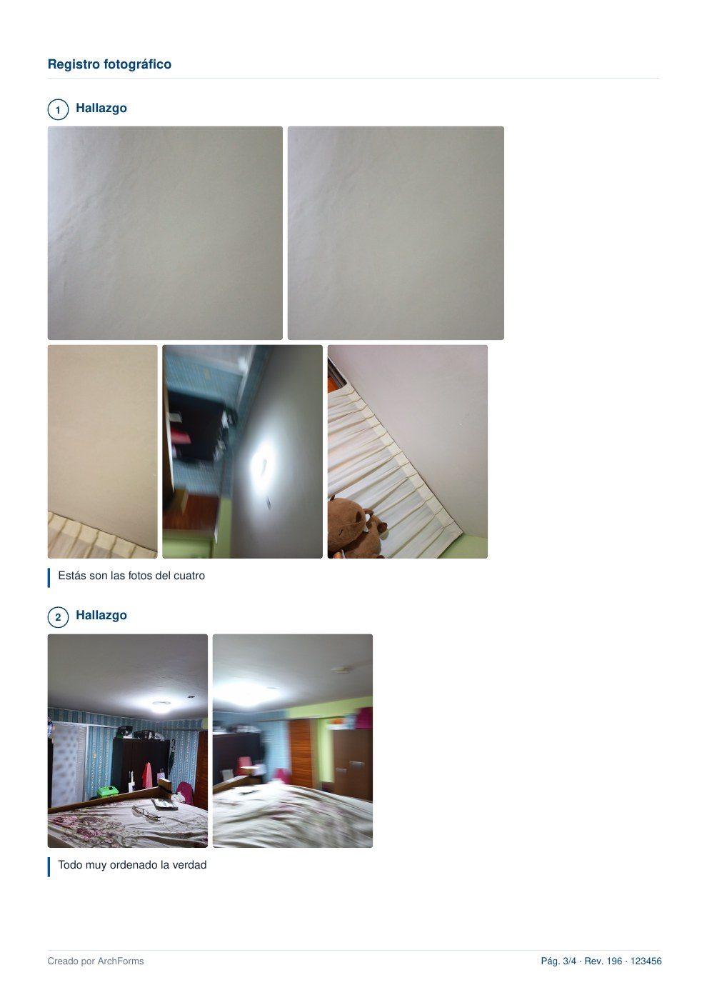

Report and Run
Reportes fotográficos
para distintos sectores.
Y no es broma.

El problema es ese... son herramientas
 Excel
Excel ARCHFORMS
ARCHFORMS

EXPORTADO DESDE ARCHFORMS
Un checklist, unas fotos y un audio.
Y el informe está listo.




EL INTERÉS EXISTE.
Reportes fotográficos
para distintos sectores.
Un flujo de visita:
expediente, checklist e informe.
Herramientas existentes, una necesidad que merece atención.
 ARCHFORMS
ARCHFORMS